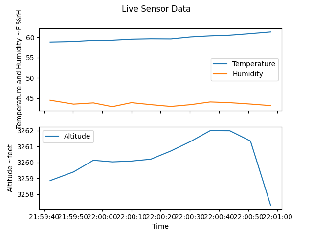

Case study · Hardware & web
Altimeter Pi
A Raspberry Pi weather station that logs sensor data and serves a live, self-updating graph — built as a first taste of long-running services.
The idea
The Sense HAT on a Raspberry Pi exposes temperature, humidity, and barometric pressure. I wanted a dashboard that updated without a manual refresh, and a log I could keep and inspect later.
It also had to survive unattended. The interesting challenge was not reading a sensor. It was building something that starts at boot, keeps running, and shuts down cleanly when asked.
How it works
- A background thread samples the sensor every five seconds and appends a row to a CSV log.
- Matplotlib renders the latest data to a PNG using the non-interactive
Aggbackend, so the renderer works without a display. - A small Flask app serves the dashboard, the generated graph, and a Server-Sent Events endpoint for live sensor values.
- A systemd unit starts the app at boot. Signal handlers catch
SIGINT,SIGTERM, andSIGTSTPso the sensor and logging thread stop cleanly.
The altitude calculation
Altitude comes from barometric pressure using the standard atmosphere approximation, then gets converted to feet. I applied fixed calibration offsets to temperature, humidity, and pressure after comparing the readings against local conditions.
altitude = 44330.8 * (1 - (pressure / 1013.25) ** 0.1903)
altitude_ft = altitude * 3.28084 + pressure_offsetDecisions worth explaining
- A thread, not a second process. The logging loop only sleeps and appends rows, so a thread keeps the Flask request path responsive without extra moving parts.
- CSV, not a database. The dataset was small and I wanted to be able to open the log in any spreadsheet. That trade-off would change if the project grew.
- Server-Sent Events. The data flows one way, from server to browser. SSE is a better fit than polling and simpler than a WebSocket for this.
- systemd for startup. The unit file is five lines, survives a reboot, and gives me logs through
journalctl.
Watch it run

What I’d improve
- Move logging into its own worker or service so a web restart never interrupts data collection.
- Replace the CSV with SQLite and add a proper retention policy.
- Make the calibration offsets configurable instead of hard-coded.
- Add tests around the altitude calculation and the cleanup path.
What I learned
This was my first project that had to behave like a service rather than a script. Threading, graceful shutdown, boot persistence, and logs are not glamorous, but they are the difference between a demo and something that is still running a week later.
The code is on GitHub.